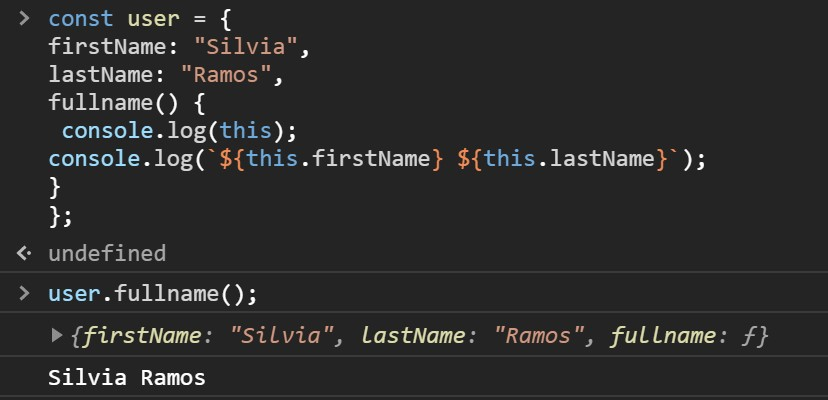
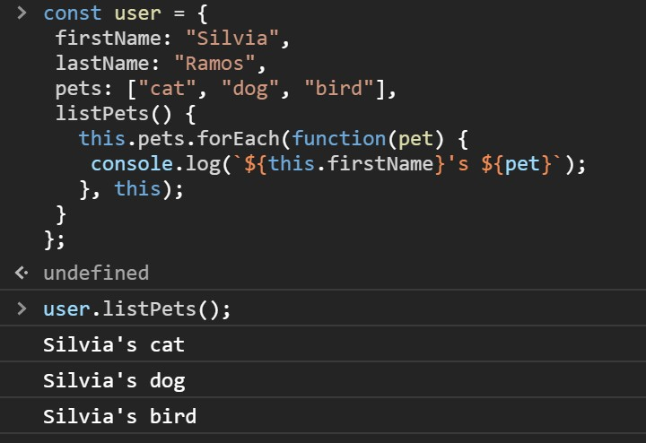

This
It is the object that is executing the current function, so without any context, this refers to the global object which in a browser is the window. It means, it is refers to the root - the global scope
The this keyword's value has nothing to do with the function itself, how the function is called determines this' value.
As an example:
function testThis() {
console.log(this);
}
testThis();
this again refers to the global object window, since the function is being executed from the global object.
How does it work on a object literal?
Let's have a look at an example!
Within the object, this now refers to the object in which it is called in. An easy way to remember what this will refer to is by looking at the line where the function or method is called.
user.fullName(); Whatever is to the left of the function or method, will be what this will bind to (on this case, user).
Let's have a look at another example:
On this context, this will refer to the object, so we can use this.pets.forEach(); Then, we will create a function and log each pet.
But what if we now want to add the user's name before the pet? So for example, we want it to say "Silvia's cat, dog and bird".
So in this context within the forEach method, we have another function which does not bind to the original object, but to the global object, so in this instance, since we are using forEach();, we can pass an argument, so we will pass in the original this which refers to the object, and now it works as expected.
Let's have a look at a constructor function:
function User(name) {
this.name = name;
console.log(this);
}
const newUser = new User("Silvia");
User {name: "Silvia"}
Here we have a user function that takes an argument of name, and then it assigns this name to that name and then it logs this to initialize the constructor function we create a constant of newUser, which is equal to the new User("Silvia");
By using new, we are creating an object, and now it returns that object with the name that we passed it
Let's have a look at a constructor function:
On this case, this refers to the HTML element that received the event
< button onclick="this.style.display='none'">
Click to Remove Me!
< / button >